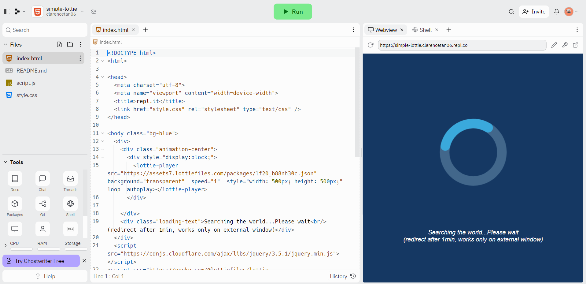

I have learnt the basics of html and also learnt how to change the colours of the words and add youtube videos and pictures via searching google for the week 1 activity. Week 1 was tough to adjust to the new language but i was able to quickly catch up with things as the slides were very detailed. Some things i learnt in week 1 include tag, p, some css, head, body , headings, unordered lists, ordered lists, img, etc.

I've learnt about html 5 semantic and also learnt new elements such as aside,article and others. I also learnt CSS and learnt that CSS defines the style of html. CSS is colour, size and position while html is content and structure.also learnt about ID and class attributes. Some examples of html 5 semantics i learnt about header, nav, article, section, form, aside, etc. Aside from learning about inspector mode and device mode that can be used on web pages, things i learnt about css include inline style, style element, external style sheet, class attribute, fonts and others.

We did advanced CSS layout. Also learn about forms, CSS recap and flexbox. Also learnt about media queries and the need to make the website suitable for diff devices(positioning). This week focused more on forms, input tag, labels, validation, nested elements and positioning, including relative position, absolute position, fixed position and z index. Also learnt about what wireframes are and why its needed in ID.

Week 4 we learnt more about flexbox and also learnt how to control the width of images. split flex for example allow us to position images in a way we want to in the website. We also learnt how to use a background image. Some things learnt include responsive images and how to set up git hub repositories.


Week 5 we used the linkedin video to learn more about javascript. we were also given practises to practise javascript and use the skills that we learnt in different scenarios. it was quite insightful as week 5 really opened up the world of javascript and what I as a web developer can do. Week 5 also marked the start of Assignment 1, where we submitted our checkpoint 1.
Week 6 we recapped a bit on basic javascript that we learnt in week 5. We also learnt about if else statements and loops that can be used in javascript. This week was a bit tough to understand but after a while and after going through some of the CA's i got a bit more used to it. Some things that was gone through in class includes data types, comparison & logical operators such as !=, &&, >=, etc, which im familiar with thanks to C# and python.
Week 7 we learnt how to do sample username checks and how to do it such that the user has to input a certain number of characters. We also learnt about DOM(Document Object Model), event handling and validation, methods in local storage and JSON. This week also marked the end of Assignment 1.

Week 8 we learnt about bootstrap and j-query. Also learnt about how to make things disappear when clicking it. Some things learnt include getters, setters, remove(), hasClass(), append, update, insert, etc. We also got introducted to API which can help with data storage.

Learnt more about bootstrap.
Week 12 did some recap on what we've learnt so far and also learnt about RestDB and how to collate responses from forms. Basically it can store data and the data can be retrieved, updated, and even deleted.

week 13 was a continuation from week 12's restDB. We also went through the assingment 1's common mistakes.
week 14 learnt about lottie and how you can add animations to a website or even when the page refreshes or only when you want it, eg using the hide function.
Week 15 was the start of assignment 2. Week 15 i did checkpoint 1 of the assingment, which involved doing the wireframe and a brief description of the website that me and my partner plan on doing.
Week 16 i continued working on assingment 2. We thought about which API to use and also started bit on the project. Here is the project so far. I reused some of the things from the previous stuff from the assingment including nav bar, slideshow and others.